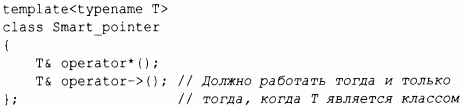
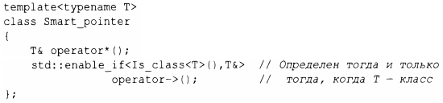

⇐13.9.2 Предикаты типов 13.10 Советы⇒
Очевидные способы использования предикатов типов включают условия для static_assert, if времени компиляции и enable_if. enable_if стандартной библиотеки - это широко используемый механизм для условного введения определений. Рассмотрим определение "интеллектуального указателя":
Оператор -> должен быть определен тогда и только тогда, когда т является типом класса. Например, Srnart_pointer<vector<T>> должен иметь оператор->, а Srnart_pointer<int> - не должен. Мы не можем использовать if времени компиляции, потому что мы не внутри функции. Вместо этого мы пишем
Моя функция типа Is_class() определена с использованием свойства типа is class точно так же, как определена Is_aritmetic () в §13.9.2.
Если Is_class<T> () имеет значение true, возвращаемый тип opera tor->()-Т&; в противном случае определение оператора operator->() игнорируется.
Синтаксис enable_if странный, неудобный в использовании и во многих случаях станет ненужным при появлении концептов (§7.2). Тем не менее еnаblе_if является основой современного шаблонного метапрограммирования и многих компонентов стандартной библиотеки. Он основан на тонкой языковой возможности под названием SFINAE ("Substitution Failure ls Not An Error" - "ошибка подстановки ошибкой не является").